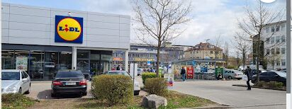

Fate come se foste a casa vostra! Vogliamo che il vostro soggiorno sia fantastico, per questo abbiamo raccolto qui le informazioni più importanti. Per domande o suggerimenti contattateci pure – buon divertimento a Fellbach!
Anita & Johannes
📄 Guida PDF (inglese)Arrivo & check-in
L’appartamento si trova nell’edificio sul retro (Bruckstraße 22/1). Accesso in auto, parcheggio e ingresso si raggiungono dal retro, dal Bruckwiesenweg – non dalla Bruckstraße.
📍 Destinazione navigatore: BruckwiesenwegCome arrivare
- Percorrete la Bruckstraße e svoltate nel Bruckwiesenweg all’angolo con la casa rossa (ristorante Da Patrizia).

In auto: Bruckstraße (in alto) → Bruckwiesenweg → parcheggio (linea rossa) - Seguite il Bruckwiesenweg finché curva a sinistra. Dopo la curva vedrete a sinistra l’edificio rosso con due porte di garage bianche. Parcheggio: parcheggiate sull’area lastricata davanti alla porta sinistra del garage doppio (accanto al camper) – potete bloccare completamente questa porta. La porta del garage di destra deve restare sempre libera.

Bruckwiesenweg: edificio rosso con due garage bianchi - A destra dei garage c’è un cancello metallico con tettoia.

Il cancello a destra dei garage - Il cancello metallico è aperto – basta attraversarlo. Proseguite a piedi lungo il vialetto lastricato accanto alla casa bianca, oltre gli orti rialzati, fino alla porta d’ingresso bianca con i gradini e la tettoia di vetro.

Vialetto lungo la casa fino alla porta 
La porta d’ingresso bianca con tettoia di vetro - La tastiera Yale si trova in alto a destra sulla porta d’ingresso: toccate la tastiera per accenderla → inserite il vostro codice personale → confermate con la ✓ verde → abbassate la maniglia. Il codice si trova nell’app Airbnb nel vostro viaggio (istruzioni per il check-in) ed è valido solo durante la prenotazione.

Tastiera Yale: inserire il codice, confermare con ✓ - Dritto nel corridoio c’è la porta con il cartello «Air BnB» – è il vostro appartamento. Al vostro arrivo la chiave è inserita nella serratura.

Nel corridoio: porta «Air BnB»


Vista dall’alto

Con autobus & treno: vedi trasporti. La fermata dell’autobus Cannstatter Platz è a pochi minuti a piedi.
Wi-Fi
L’appartamento & le regole della casa
- È vietato fumare in tutto l’appartamento.
- Niente feste né eventi.
- Silenzio dalle 22 alle 7 – per favore anche nel cortile e sul tragitto verso l’auto.
Buono a sapersi
- Riscaldamento & aerazione: regolate i termosifoni con il termostato (posizione 3 ≈ 20 °C). In inverno arieggiate brevemente ma a fondo (finestra spalancata per 5 minuti) invece di lasciarla a ribalta.
- Caffè: per il caffè del mattino c’è una macchina Senseo. Di solito lasciamo qualche cialda per iniziare – per soggiorni più lunghi conviene acquistarne una confezione facendo la spesa (si trovano in ogni supermercato).
- Rifiuti: alla partenza potete semplicemente lasciare i rifiuti nell’appartamento – ci pensiamo noi.
- La domenica in Germania tutti i supermercati sono chiusi – meglio fare la spesa il sabato.
Spesa, panetterie & ristoranti
★ = valutazione Google (numero di recensioni) dalle nostre ricerche – toccate «Mappa» per valutazioni e orari aggiornati. Distanze dall’appartamento.
Supermercati & drogheria




Panetterie


Mangiare & bere


I nostri consigli – su misura per voi
Per le famiglie
Uno degli zoo più belli della Germania, con tante case degli animali e serre – una bella giornata anche con freddo o pioggia.
Piscina coperta con scivoli, sauna e il nuovo mondo della giungla per i più piccoli (aperto nell’estate 2026). La piscina all’aperto è chiusa in inverno.
Un percorso ad anello pianeggiante e senza barriere (ca. 4 km) tra i vigneti – facile con il passeggino, con vista su Fellbach.
130 anni di storia dell’automobile su nove piani – appassionante anche per i bambini e perfetto nei giorni di pioggia.
Qui vicino: Da Patrizia (★ 4,5) proprio accanto e la Trattoria Pane e Pino (★ 4,7) a circa 150 m – pizza & pasta piacciono anche ai più piccoli.
Per le coppie
Il sentiero del vino (ca. 4,3 km) parte dalla Neue Kelter dei viticoltori di Fellbach (Kappelbergstraße 48) e attraversa i vigneti fino al belvedere «Blick über Fellbach». Il primo sabato di ogni mese c’è una degustazione aperta.
Questa cappella neoclassica sopra i vigneti offre una delle viste più belle sulla valle del Neckar. La cappella è chiusa da novembre a marzo – ma la passeggiata e il panorama valgono tutto l’anno.
Acqua minerale calda in vasche interne ed esterne, più sauna – meravigliosamente rilassante, soprattutto in inverno.
Trattoria Pane e Pino (★ 4,7), Irodion (★ 4,6, greco, ora nella storica Alte Kelter) o semplicemente accanto da Da Patrizia (★ 4,5).
Esslingen con il centro storico a graticcio e il castello (ca. 20 min), oppure la Residenza di Ludwigsburg, uno dei più grandi palazzi barocchi della Germania (ca. 25 min, visite guidate in inverno).
Per chi viaggia da solo & per lavoro
Dalla stazione di Fellbach la S2 o la S3 raggiunge la stazione centrale di Stoccarda in circa 12–15 minuti – Schlossplatz, Königstraße, il mercato coperto e la Staatsgalerie sono poi raggiungibili a piedi.
Due tappe obbligate per gli appassionati di auto, ognuna si visita comodamente in 2–3 ore. Entrambi sono chiusi il lunedì; il Museo Porsche è inoltre chiuso dal 18 gennaio al 1° febbraio 2027 per lavori.
La prima torre della televisione al mondo in cemento armato – ottima anche dopo il lavoro: tutti i giorni 10–22, ultimo ingresso 21:30.
Anello sul Kappelberg tra vigneti e bosco fino alla torre panoramica – ca. 13,7 km, circa 4 ore. In inverno partite presto (verso le 17 fa buio) e attenzione al ghiaccio nel bosco.
Maultaschen e Kässpätzle al Wirthshaus Zum Kuckuck (★ 4,4, 747 recensioni) – accogliente, anche per cenare da soli.
Eventi a Fellbach & dintorni
Aggiornato al 22/11/2026 · senza garanzia – verificate con l’organizzatore prima di andare.
- 28/11–22/12/2026Mercatino di Natale di Fellbach
Intorno alla Lutherkirche e al municipio, con palco e attività per bambini. Lun–mer 16–20, gio–dom 12–20, ingresso libero (fine prevista il 22/12).Centro di Fellbach - 25/11–23/12/2026Mercatino di Natale di Stoccarda
Uno dei più antichi e grandi mercatini di Natale d’Europa, circa 250 bancarelle. Dom–gio 11–21, ven & sab 11–22.Centro di Stoccarda · ca. 15 min in S-Bahn - 24/11–22/12/2026Mercatino medievale & di Natale di Esslingen
Dom–gio 11–20:30, ven & sab 11–21:30.Esslingen am Neckar · ca. 20 min - 24/11–22/12/2026Mercatino di Natale barocco di Ludwigsburg
Circa 150 bancarelle in uno scenario barocco, tutti i giorni 11–21.Ludwigsburg · ca. 25 min - fino a inizio/metà gen. 2027Christmas Garden alla Wilhelma
Percorso di luci nel parco storico, la sera. Biglietti online (christmas-garden.de).Stuttgart-Bad Cannstatt - ogni 1° sabatoDegustazione aperta – Fellbacher Weingärtner
Prossime date: 05/12/2026, 02/01, 06/02 e 06/03/2027.Neue Kelter, Kappelbergstraße 48, Fellbach - 20/01/2027 · 20:00«Huckleberry Finn» con Herbert Knaup (in tedesco)Schwabenlandhalle Fellbach
- 07/02/2027 · 19:00Il lago dei cigni – Grand Classic BalletSchwabenlandhalle Fellbach
- 20–21/02/202729ª fiera del vino «Die Besten aus dem Remstal»
Circa 50 cantine in un fine settimana.Alte Kelter, Kelterweg 7, Fellbach - 13/03/2027 · 20:00Azzurro – rivista italo-popSchwabenlandhalle Fellbach
- 20/03/2027Bobby & Max – radiodramma dal vivo per bambini, in tedesco (13:00 & 18:00)Schwabenlandhalle Fellbach
Spostarsi in autobus & treno
- Autobus: fermata Fellbach Cannstatter Platz (pochi minuti a piedi) – autobus per la stazione e altre destinazioni.
- S-Bahn: stazione di Fellbach – S2 e S3 per la stazione centrale di Stoccarda (ca. 12–15 min), l’aeroporto/la fiera e in direzione Schorndorf o Backnang. Il modo più comodo per andare a Stoccarda.
- Metropolitana leggera U1: per lavori, dal 13/12/2026 la U1 termina a Fellbach Schwabenlandhalle. Probabilmente da marzo a luglio 2027 al posto della U1 circoleranno bus sostitutivi fino a Bad Cannstatt.
Orari e biglietti: app VVS o DB Navigator – che mostrano anche i lavori in corso. Il Deutschlandticket è valido su tutti i trasporti locali.
🚗 Stoccarda è una zona a basse emissioni: le auto necessitano del bollino verde («Umweltplakette»).
Calcola percorso VVS ↗
Partenza
Check-out entro le 11:00. Prima di partire, per favore:
Speriamo che abbiate trascorso un bel soggiorno! Saremmo felicissimi di ricevere una vostra recensione su Airbnb. ⭐
Contatti & emergenze
Il modo più rapido per contattarci è l’app Airbnb oppure il telefono:
Numeri di emergenza
- Vigili del fuoco & ambulanza: 112
- Polizia: 110
- Guardia medica: 116 117
- Farmacia di turno: aponet.de – ricerca farmacie